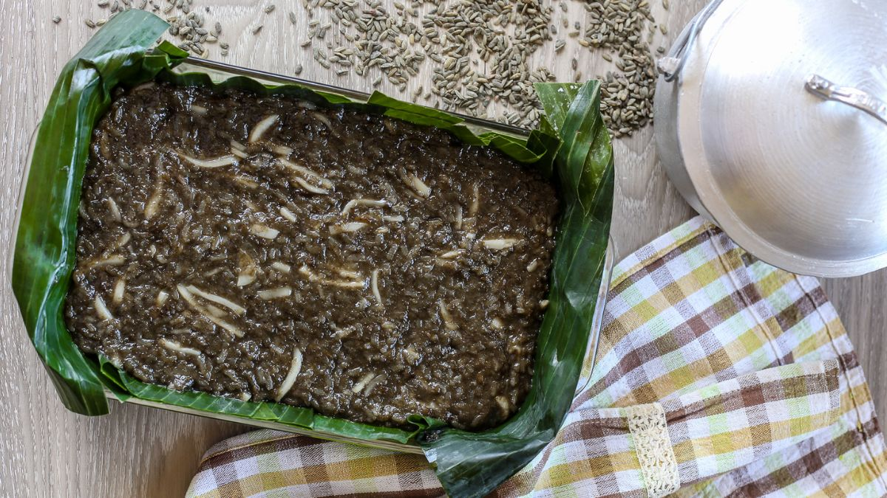
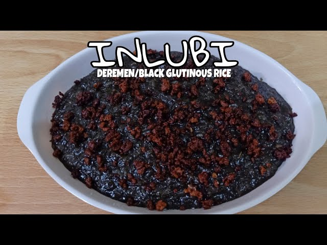

Inlubi is a traditional sticky rice dessert from Pangasinan, known for its distinctive dark color and rich coconut flavor. It is a local delicacy often prepared during special occasions and festivals, reflecting the province’s deep-rooted rice-based culinary culture.
Fun Facts
- Sometimes wrapped in banana leaves
- Has a chewy and creamy texture
- Often homemade rather than store-bought
Preparation and Ingredients

Kaleskes typically uses boiled beef innards, such as tripe and intestines, simmered with bones and skin to create a thick, flavorful broth. Garlic, onion, salt, and pepper provide the base seasoning. The name derives from the Pangasinan word for “intestines.” Unlike other offal soups, it does not use bile, which gives it a milder flavor compared to similar Ilocano dishes.
Regional Variations
Inlubi may be served warm or at room temperature, sometimes topped with grated coconut or drizzled with additional coconut cream. While it resembles other Filipino kakanin (rice cakes) such as Biko, inlubi’s use of black glutinous rice gives it a unique taste and texture profile.
Cultural Significance

This dessert holds cultural importance in Pangasinan cuisine, often featured during harvest festivals, family reunions, and religious occasions. Sharing inlubi symbolizes hospitality and community, values central to the region’s culinary traditions. Its preparation, usually communal, helps preserve local cooking knowledge and intergenerational ties.
Grandparents in Pangasinan often pass down their own inlubi recipes. Some families say their version is “the original,” creating friendly debates during reunions about who makes the best one.